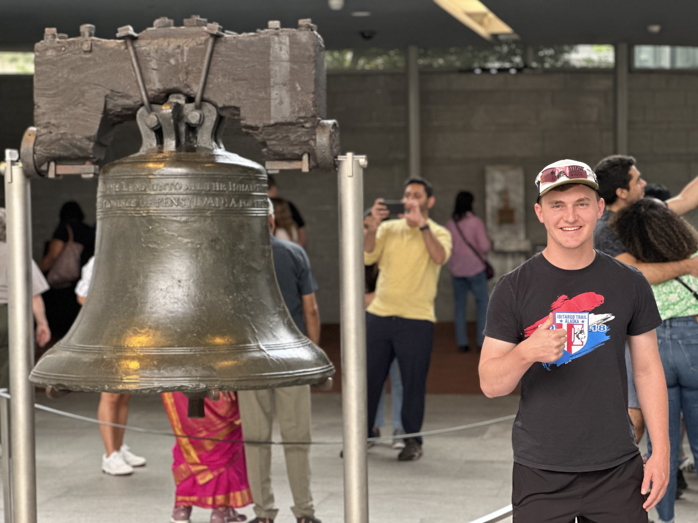
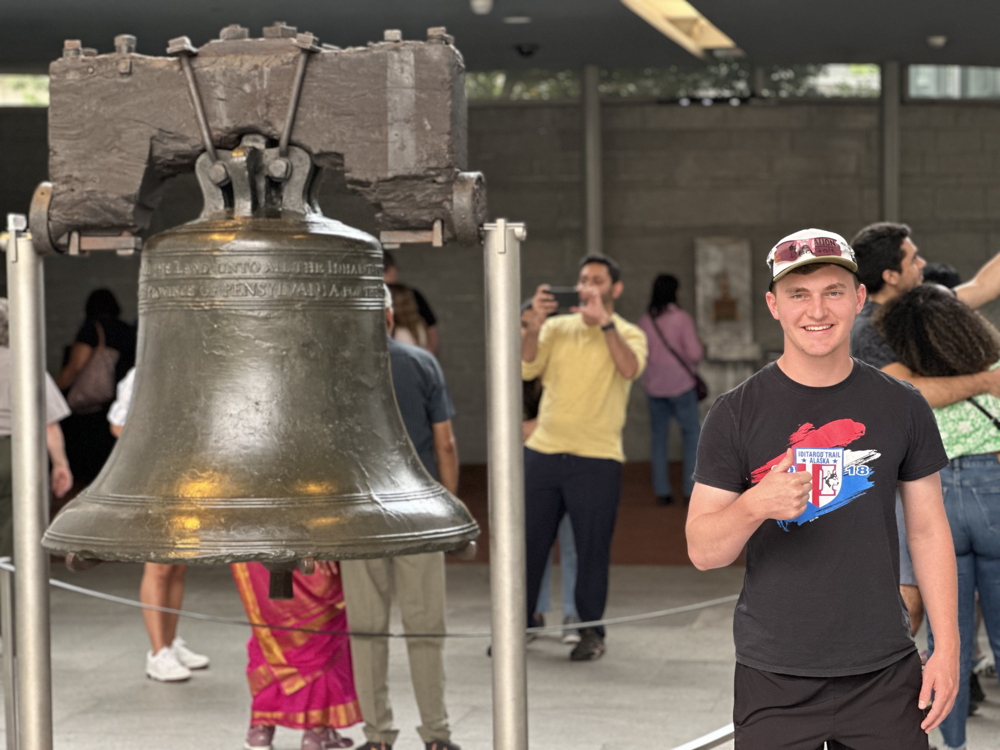

Leadership Roles:
I am the president of the Texas A&M Disc Golf Team. I have learned the importance of team work as well as managing logistics and planning team travel.
Student Organization Profile:
TAMU DGC Student Org Profile
Battalion Article about the Club:
Batallion Article on Club
Disc Golf Club Website I designed and Manage:
TAMU DGC Club Website
Professional Disc Golf Association (PDGA) Profile:
PDGA Profile
I am also part of Team Elevation Disc Golf where I have been able to work one on one with the owners of the company to orchestrate events and provide ideas for them.
Team Elevation Player Profile:
Elevation Player Profile
I have been the captain of over 20 intramural teams throughout my college years.
Activities Involved In/Past Achievements:
I am also part of Antioch Community Church which has provided me with support and fellowship with others.
I am also a Brown Foundation Scholar where I have gotten the opportunity to network with some of the best students at Texas A&M University.
I was also a National Merit Finalist at my high school. I was one of the first to do so at my high school.
National Merit Finalist Article:
National Merit Finalist
I was Valedictorian of my high school for the class of 2021.
Article:
Valedictorian
I am an avid runner and ran cross-country and track in high school.
Runner of the Year Nominee:
Runner of the Year Nominee
Athletic.net Profile:
Athletic.net Profile
I am part of the Engineering Honors which has provided me the opportunity to go to many unique events throughout the year.
 
